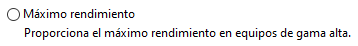
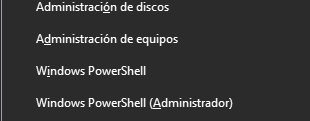
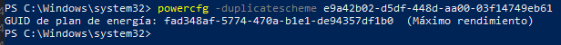
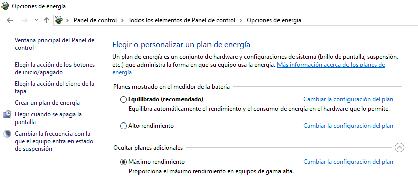

Plan de energía
Son configuraciones que controlan cómo se gestiona y utiliza la energía en un dispositivo, especialmente en una computadora portátil o de escritorio. Estos planes de energía permiten a los usuarios equilibrar el rendimiento del sistema con la eficiencia energética, ajustando configuraciones como la velocidad del procesador, la pantalla y la suspensión del sistema.
Plan Maximo Rendimiento
Este es un plan oculto por windows, que busca usar todo el hardware para ganar un mejor rendimiento y una mejor experiencia, ya que se limita algunos procesos. No todos los dispositivos logran tener un cambio significativo ya que como se indica en la descripcion es mas recomendable usarlo en dispositivos de gama alta
Como activarlo
Para activar el plan de energía de maximo rendimiento, se requiere abrir Windows PowerShell con la tecla windows + x.
Abrimos Windows PowerShell como administrador y les aparecera la siguiente interfaz

Dentro de la interfaz escribimos el siguiente comando:
Luego de introducir el comando, aparecera la activacion del plan de energía de Maximo Rendimiento
Y para verificar que ya se muestra nos dirigimos a las opciones de energia y poder verificalo
